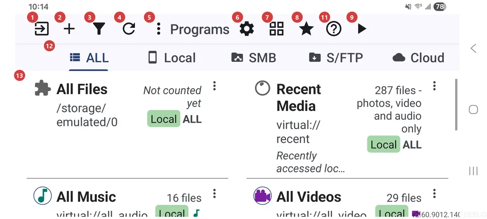
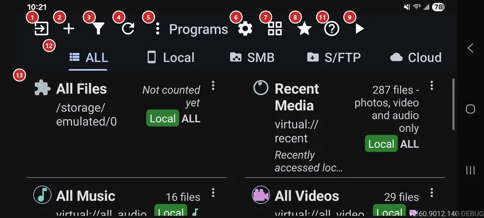

Resource list
What this is for
The resource list lists your resources - the device folders, network shares and cloud folders you added. Add a resource, open it to browse its files, or start playback straight from here.


In this order
- Press Add 2 to connect your first resource: a device folder, a network share or a cloud folder. Until you do, the list stays empty.
- If you use network or cloud resources, pick a kind with the tabs 12 to see only those. The tabs show up once a remote source is turned on.
- Tap a row in the list 13 to open its files in the file browser. Tap the row's icon to start a slideshow right away.
- Use Filter 3 to sort the list or narrow it down by kind or name. Refresh 4 comes in handy after files change outside the app.
- Switch the view with 7 when you want more or fewer resources on screen: list, grid or table.
- Run player 9 skips the browsing and starts the selected or most recent resource. Favorites 8 opens everything you starred.
- Settings 6 is where you tune the app, Help 11 opens this page, and Exit 1 leaves the app.
The elements
Command bar
1ExitLeaves the app, or sends it to the background while something still runs.
When music is playing, a recording is running, scheduled operations are working or edge gestures are on, one press only minimizes the app so those keep going, and the icon changes to show it. With nothing running in the background, one press closes the app. A long press always closes everything, background functions included.
2AddOpens the screen where you add a new resource.
A resource is a place with your files, such as a device folder, a network share or a cloud folder. Once you save it, it appears in the list and you can open it. Tapping the empty list does the same thing.
3FilterSorts the resource list and narrows it down.
Pick a sort order (manual, name, date or number of files), then limit the list by resource type, media type or part of the name. The check mark applies your choice, and the clear-filters button resets it. While a filter is on, a note at the bottom of the list says which one.
4RefreshRescans every resource for new and changed files.
Use it after copying files in from another app or a computer, or when a network share was offline. It also resets network connections and gives video thumbnails that failed earlier another try.
5More actionsOpens the menu with the actions that are not on the bar.
The button shows up only when there is something in the menu: programs (when the programs panel is off), buttons that did not fit on a narrow screen, and Help. Nothing disappears on a small screen - it moves here.
6SettingsOpens the app settings, split into four tabs.
The tabs are General, Media, Player and Management. Start with General for language, theme and device profile. If you are not sure where an option lives, Settings has a search.
7Grid view / list viewSwitches how resources are shown: list, grid or table.
The icon shows the view you get next, and your choice is remembered. The table needs a wide window - a tablet, desktop mode or a large unfolded screen - and adds columns for name, source, files, content and path, plus a details panel. Narrower windows switch between list and grid.
8FavoritesOpens everything you marked as a favorite, in one place.
It opens Favorites in the file browser. The button is shown when Favorites is turned on in Settings; you mark files while you browse.
9Run playerStarts playback of a resource without opening the file browser.
It plays the resource you selected. With no selection it takes the one you used last, or the first in the list. The button is grayed out while the list is empty.
10Search resourcesFinds a resource by name or path in the table.
The field appears only while the table view is on. Type a few letters and the rows narrow down as you go. Clear it to bring the whole list back.
11HelpOpens help for this screen.
You get what each button does and the usual order of use, with numbers matching the markers on the screenshot.
Resources
12Resource type filterShows only the resources of one kind.
ALL shows everything; Local, SMB, S/FTP and Cloud keep just that kind. A tab is built only for a source you turned on, and the whole strip stays hidden until at least one network or cloud source is on, because Local would show the same as ALL. Long-press a tab to fold the strip into a small chip, and tap the chip to bring it back.
13ResourcesYour resources, one row or tile each.
Tap a row to open its files in the file browser. Tap its icon to start a slideshow, or press and hold the row to edit the resource. Each row also has buttons to edit, copy its settings, move it up or down, delete it or open more actions.
- Undo
- Deleting a resource asks first, removes it from the app and cancels scheduled operations that use it. Your files stay where they are, and you can add the resource again.